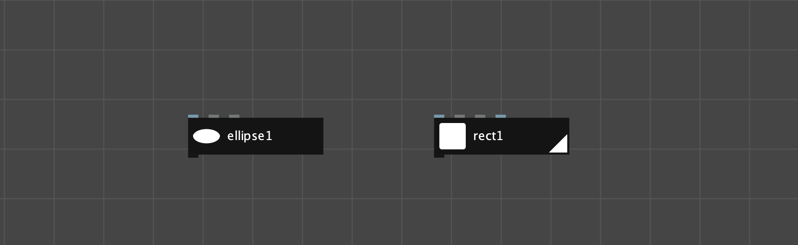
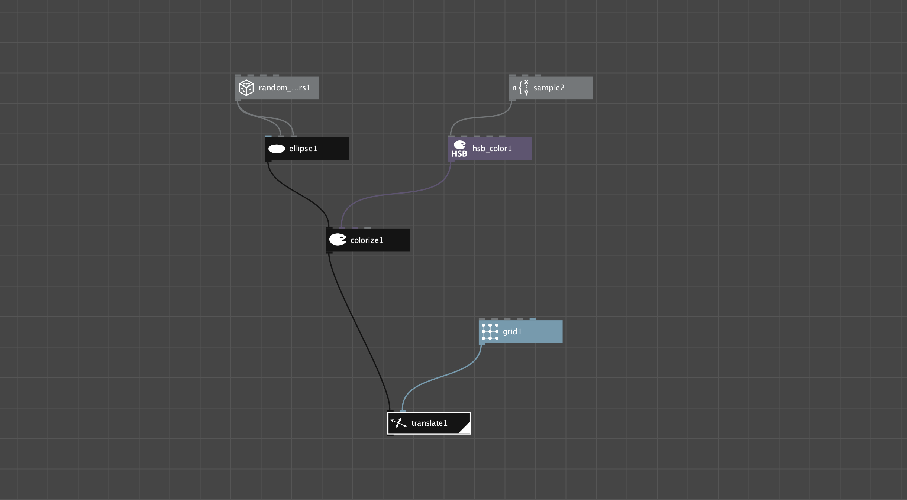
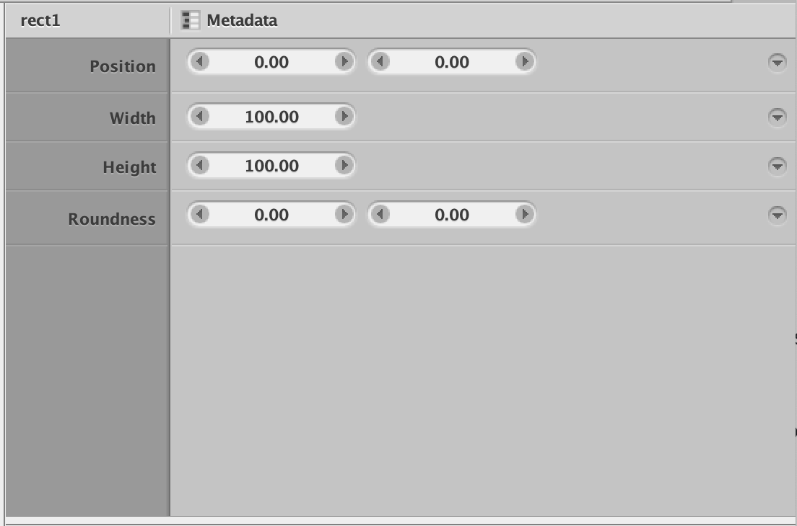
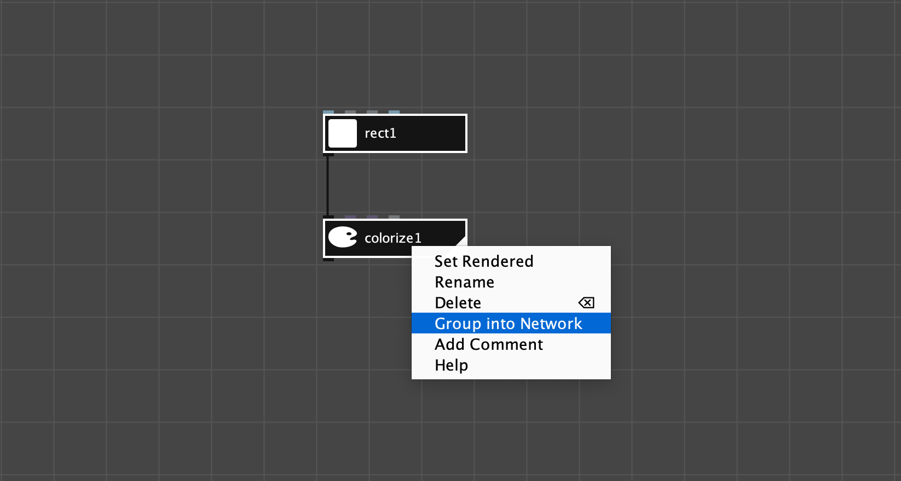
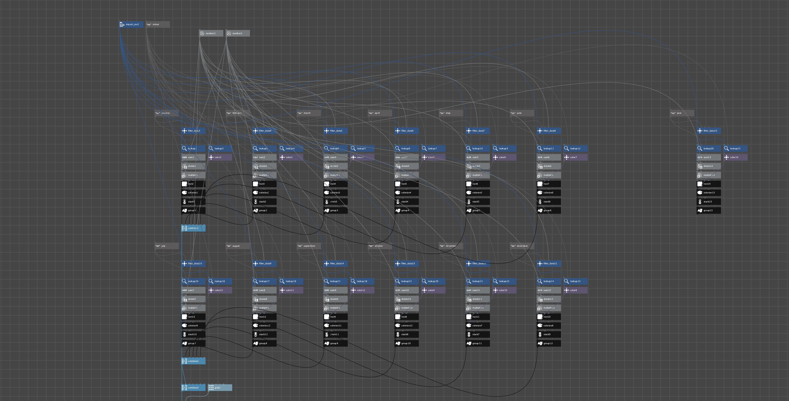

Nodebox 3.0.51
Multi In, Single Out
Nodebox is an open source vector graphics program that (as the name might suggest) uses nodes as its primary method of generating images. Nodebox places emphasis on creating generative and data-driven graphics. Each node in Nodebox represents an action that generates or manipulates data.
Anatomy of a Nodebox Node

Each node in Nodebox is set to the same fixed size, contains an identifying icon, and a unique identifying name that can be changed by the user. Nodebox’s nodes have colour-coded input sockets referred to as “ports” which are located on the top edge of each node. A single output port is located in the bottom left corner. When these tooltips are hovered over the name of the corresponding parameter in the properties panel is conveyed to the user with a tooltip. Each node is assigned a colour based on the data type that it outputs. Each node has an icon and a unique identifier. The white triangle along the bottom right side denotes which node in the graph is currently being displayed in the viewer pane.
Nodebox’s Node-graph

While Nodebox’s graph is not laid out automatically, it also contains no pipe elbows to allow users to change the direction and placement of pipes in the graph. Because pipes are laid out by the program automatically, the only way to change the organization of the graph is to move the nodes around, usually by spacing them out. Nodebox also does not contain any type of backdrop for organizing nodes within the graph.

Nodebox’s properties panel allows users to manage a node’s controls and add custom property values. Each item in a node’s properties is always exposed as a socket on the top of each node in the graph.
Grouping and Complex Graphs

Nodebox does contain the usual system of grouping nodes that is present in other software packages. Multiple nodes can be selected in the graph and grouped into what Nodebox refers to as a “network” through the right click menu. Custom input sockets can be created and passed through to the nodes within the network. Parameters can be set in a similar way, allowing users to create custom tools similar to other software packages.

This image is an example of a more complex graph made in Nodebox, it highlights some of the organizational difficulties posed by the program’s automatic pipe layout algorithm. Note that pipes in Nodebox are also rendered overtop the nodes.
Aside from groups, interaction with the graph in Nodebox is substantially different from the other applications covered in this paper. New connections can only be made by starting from a node’s output and connecting it to another’s input, you cannot connect nodes starting with a node’s inputs ports. The grid lines in the background are never accurately aligned with the sides or position of the nodes however, nodes in Nodebox do exist on a grid. Nodebox currently uses the ctrl+Shift+A shortcut to open the New Node window. This shortcut requires two hands to complete instead of one. The most common shortcut for this function in other software appears to be the tab key.
Other points of Interest
When attempting to rename a node to a name that already exists in the graph Nodebox will select the node in the graph with the name the user was trying to assign and rename the previous node to the next available number. For example, if a user has two nodes named rect1 and rect2 and they try to rename rect1 to rect2 then rect1 will become rect3 and rect2 will be selected in the graph.
All of the points in the previous two paragraphs frustrate me. I personally think Nodebox 3.0.51 is an example of a very powerful program that exhibits many user UI and UX papercusts that will prevent it from achieving widespread adoption. I would recommend that anyone attempting to build a node-based program try to use it for a day to understand and experience its many user experience issues, and ensure that they do not make their way into your application.